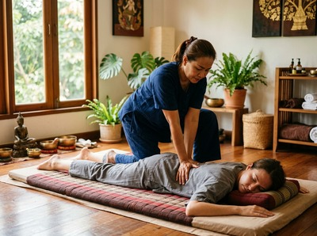

Thai massage in Charing Cross puts one of Glasgow's most well-connected neighbourhoods within easy reach of genuine therapeutic care.
Charing Cross is the key junction where Sauchiehall Street, Woodlands Road, St George's Road, and North Street meet. It marks the border between the city centre and the West End. The area draws residents, office workers, students from the nearby Glasgow School of Art, and commuters passing through daily.
Serendipity Massage Therapy & Wellness is on Hope Street in Glasgow's city centre, just a short walk from Charing Cross. If you live in Woodlands or Garnethill, work on Bath Street or St George's Road, or pass through on your way home, Serendipity is easy to reach.
There is no need to cross the city. The studio sits right next to one of Glasgow's busiest transport hubs.

The offices around Charing Cross — including Tay House and the Elmbank Gardens buildings — hold a large working population. Long hours at a desk build tension in the neck, upper back, and shoulders. That is exactly what the Serendipity team is trained to treat.
A session after work or at lunch can make a real difference to the rest of your week.
Whether you want to release deep muscle tension, speed up recovery after sport, or take proper time to rest, there is a treatment for you. You can book your session online and choose from the following:
From Charing Cross, Serendipity on Hope Street is around ten to fifteen minutes on foot. Walk south along North Street or Bath Street and you will reach Hope Street directly. The studio is at Floor 1, Suite 50, Central Chambers, 93 Hope Street, G2 6LD.
If you prefer public transport, Charing Cross railway station on Elmbank Crescent serves the North Clyde Line. Trains reach Glasgow Queen Street Low Level in under two minutes.
Several bus routes also stop at the junction — the 1, 2, 3, 4, and 15 all run into the city centre along Sauchiehall Street and Bath Street. St George's Cross Subway Station is a short walk north for anyone coming from further away.
Serendipity is a professional team practice — not a sole trader, not a chain. Every therapist is trained to the same standard, using techniques developed by head therapist Jariya Malone.
Whether you have a specific complaint like neck pain, shoulder tension, or post-workout soreness, or just need to decompress, the team will tailor your session to what your body needs.
Regular clients from across the city centre and West End keep coming back because the results are consistent and the approach is personal. You can secure your appointment online at a time that suits you.
Charing Cross takes its name from a block of tenements called Charing Cross Place, built in the 1850s. The junction grew in importance as Glasgow expanded west from Blythswood Hill.
The red sandstone Charing Cross Mansions, completed between 1889 and 1891, remain one of the area's most recognised landmarks. For more on the area's history, visit Charing Cross, Glasgow on Wikipedia.
Serendipity is around a ten to fifteen minute walk from Charing Cross junction. Head south along North Street or Bath Street and you will reach Hope Street in the city centre. The studio is at Floor 1, Suite 50, Central Chambers, 93 Hope Street, G2 6LD.
Walking is the easiest option for most people, as the city centre is close. Several bus routes — including the 1, 2, 3, 4, and 15 — pass through Charing Cross and run towards the city centre along Bath Street and Sauchiehall Street. Charing Cross railway station on Elmbank Crescent also offers quick connections to Glasgow Queen Street Low Level in under two minutes.
Same-day availability depends on the current schedule, but it is always worth checking. The easiest way is to visit the online booking page, which shows real-time availability. You can also call the studio on 0141 673 6630 to speak with the team directly.
For anyone sitting at a desk for long hours in the Charing Cross offices, Traditional Thai Massage or Thai Oil Massage are both a strong fit. Both target the neck, shoulder, and upper back tension that builds up from screen work.
Traditional Thai Massage uses acupressure and assisted stretching to work through deep muscle tightness. Thai Oil Massage combines flowing strokes with targeted pressure for a more sustained release. The team will talk through your concerns before the session starts.
For current opening hours, check the Serendipity website or call 0141 673 6630. The studio is on Hope Street, making it easy to reach before work, at lunch, or on the way home from the Charing Cross area in the evening.